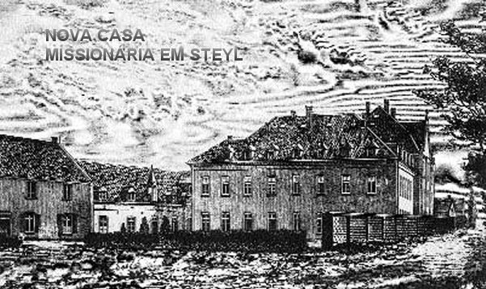
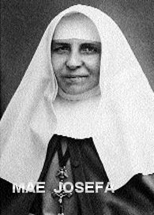
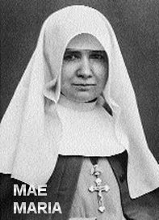
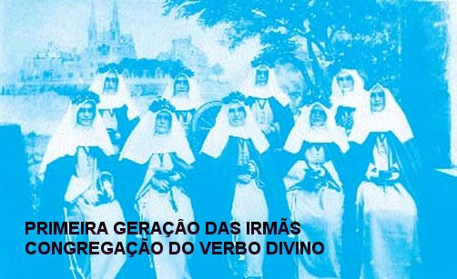
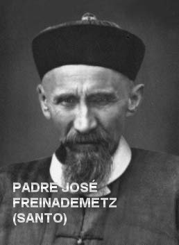
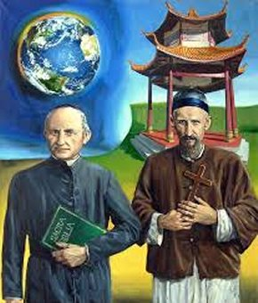
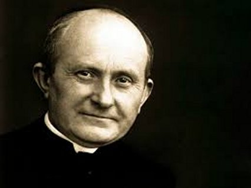

“MISSIONÁRIOS DO VERBO DIVINO”

IRMÃOS MISSIONÁRIOS
Nunca poderemos valorizar devidamente o peso dos Irmãos Missionários na Obra de Steyl: foi à oração e o trabalho deles que fez crescer bem grande a “CONGREGAÇÃO DO VERBO DIVINO” . DEUS enviou ao Fundador homens realmente impressionantes: que assumiram a manutenção da Casa, a direção da Gráfica, e se tornaram insubstituíveis no trabalho especifico da Missão.
Seguiram os seus Irmãos Sacerdotes na China, em Togo, e na América do Sul. Nas missões construíram Escolas, Igrejas, Hospitais, etc.; montaram Fazendas e cuidaram das criações. Formaram um só coração com os Sacerdotes: “o grande coração da Missão”.
IRMÃS MISSIONÁRIAS
 
Dia 29 de Dezembro de 1882, Elena chegou a Steyl; no dia 12 de Fevereiro de 1884 apresentou-se Hendrina Stenmanns. Junto com outras meninas foram ocupadas nos serviços de cozinha da Casa Missionária, e depois de longa preparação, Padre Arnaldo Janssen deu inicio à Congregação das Irmãs Missionárias Servas do Espírito Santo no dia 08 de Dezembro de 1889. Na Congregação a Irmã Elena passou a se chamar, “Irmã Maria”, que depois de cumprida sua missão existencial, foi Beatificada pelo Papa João Paulo II. Por seu lado, Hendrina passou a ser chamada de “Irmã Josefa”. As duas são consideradas como Co-fundadoras das Congregações de Irmãs Missionárias.
Bem cedo, no dia 15 de Setembro de 1895 saíram também às primeiras Irmãs Missionárias rumo à Argentina. Até a morte do Fundador Padre Arnaldo foi destinado por ele às Missões mais de 301 Irmãs. Das duas primeiras Irmãs, nem a Irmã Maria e nem a Irmã Josefa tiveram a oportunidade de sair para as Missões, porque a sua tarefa fundamental foi de apoiar o Fundador e consolidar a jovem Congregação das Servas do Espírito Santo.
IRMÃS MISSIONÁRIAS
DE CLAUSURA 
Uma das mais fortes convicções do Padre Arnaldo Janssen era a urgência da Oração para realizar a Obra Missionária, porquanto é justamente de DEUS TRINDADE SANTA que ela nasce, e em DEUS que tem o seu objetivo maior, e NELE, no SENHOR, realiza o seu perfeito fim. DEUS é o agente primeiro da Missão. Orar e Trabalhar são os dois eixos da Ação Missionária em todas as partes.
Para apoiar eficazmente na oração às duas Congregações de Steyl, o Padre Arnaldo pensou na conveniência de unir à Obra Missionária um grupo de Irmãs Contemplativas, cuja missão fosse precisamente segurar e amparar pela Oração, a ação dos seus irmãos e irmãs de vida ativa. Assim, no dia 08 de Dezembro de 1896 deu início ao grupo de “Irmãs Missionárias Servas do ESPÍRITO SANTO de Adoração Perpetua”.
No serviço eclesial, embora de vida contemplativa, elas são propriamente Missionárias participando dos trabalhos das duas Congregações de vida ativa. Na adoração contínua do “SANTÍSSIMO SACRAMENTO” , elas pedem a Graça do ESPÍRITO SANTO para toda a Igreja, e de modo particular para todas as Missões da Igreja.
MISSIONÁRIOS DO VERBO DIVINO NO MUNDO

Desde aquela data, saíram de Steyl homens e mulheres, segundo o urgente convite DIVINO de fazer com que a Boa Nova chegasse até os últimos cantinhos de nosso Planeta. O mesmo Padre Arnaldo celebrou a “Festa do Envio” em 29 ocasiões. Pessoalmente ele enviou 821 missionários: 333 sacerdotes, 187 Irmãos e 301 Irmãs.
No dia 05 de Novembro de 1907 celebrou os Missionários de Steyl o 70º aniversário do seu Fundador; estava presente o Bispo Henninghaus, sucessor de von Anzer no Shantung; no seu discurso, entre muitas outras afirmações, ele disse: «Estou aqui em nome de 40.000 cristãos chineses, que devem a Vossa Reverendíssima Padre Arnaldo, a graça de poderem escutar a Palavra de DEUS, e que rezam por Vossa Reverendíssima. Também aqui estou em nome de 43.000 catecúmenos, que também rezam por Vossa Reverendíssima, além de mais de 150.000 almas de crianças que foram Batizadas por Vossa Reverendíssima».
Com 72 anos de idade,
no dia 15 de Janeiro de 1909, Padre Arnaldo Janssen voltou ao Pai Eterno; os seus
restos foram depositados na 
Na ocasião da morte do Fundador, a Congregação do Verbo Divino (SVD) contava com seis casas de formação, 430 Sacerdotes, 600 Irmãos, 450 Irmãs Missionárias e de clausura, e mais de 1000 seminaristas.
Em 1975, cem anos depois da fundação da SVD, o Papa Paulo VI, no Domingo das Missões apresentou como modelo de vida cristã o Padre Arnaldo Janssen, junto com o Primeiro Missionário SVD, o Padre José Freinademetz. E também juntos, no dia 4 de Outubro de 2003, Domingo das Missões, os dois foram Canonizados pelo Papa João Paulo II, no Vaticano.
Também 100 anos depois da fundação das Irmãs Missionárias, foi elevada à glória dos altares a primeira mulher que participou do projeto Missionário do Padre Arnaldo, a Bem-aventurada Maria Helena.
No ano 2012, a Grande Família da CONGREGAÇÃO DOS MISSIONÁRIOS DO VERBO DIVINO de Padre Arnaldo Janssen, estava formada por 6.015 Missionários do Verbo Divino, dos quais 46 eram Bispos; e mais 3.161 Irmãs Missionárias Servas do ESPÍRITO SANTO, e por 335 Missionárias Servas do ESPÍRITO SANTO DE ADORAÇÃO PERPÉTUA.
DERRADEIRAS PALAVRAS
Em seu sermão
durante a liturgia na Inauguração da
“Casa Missionária de São Miguel”
em Steyl (Holanda), no dia 8 de setembro de 1875, Padre Arnold Janssen declarou:
“Se algo resultará disso,
é conhecido apenas por DEUS. Mas expressamos nosso agradecimento ao Doador
DIVINO por todas as coisas boas e

SUA MORTE
Padre Arnaldo faleceu no dia 15 de janeiro de 1909, em Steyl. A sua vida foi uma permanente procura da realização da Vontade de DEUS. Tinha uma sólida confiança na DIVINA Providencia e enfrentava os trabalhos mais árduos. O crescimento contínuo das comunidades por ele fundadas é a prova evidente de que o seu trabalho foi abençoado por NOSSO SENHOR. Foi Beatificado juntamente com José Freinademetz (missionário que foi por ele enviado na primeira missão à China), no ano 1975 pelo Papa Paulo VI. Depois, ambos foram canonizados juntos, pelo Papa, João Paulo II no Vaticano, no dia 05 de outubro de 2003. O Santo Arnaldo Janssen foi proclamado pioneiro do movimento missionário moderno nos países de língua alemã, holandesa e eslava. Seu culto litúrgico foi indicado para o dia de sua morte.